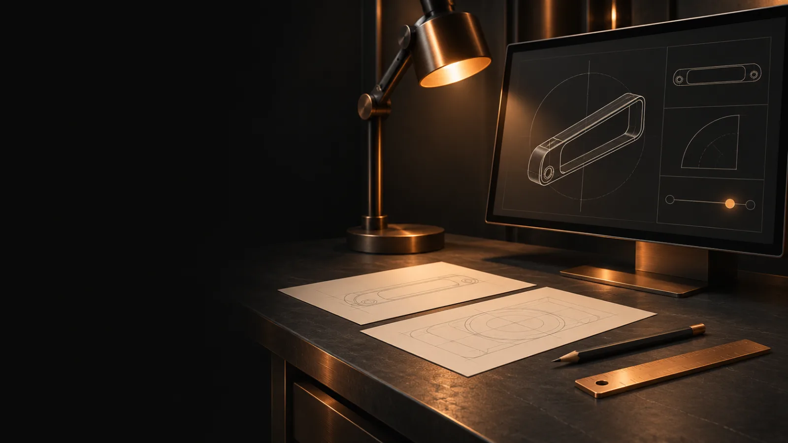
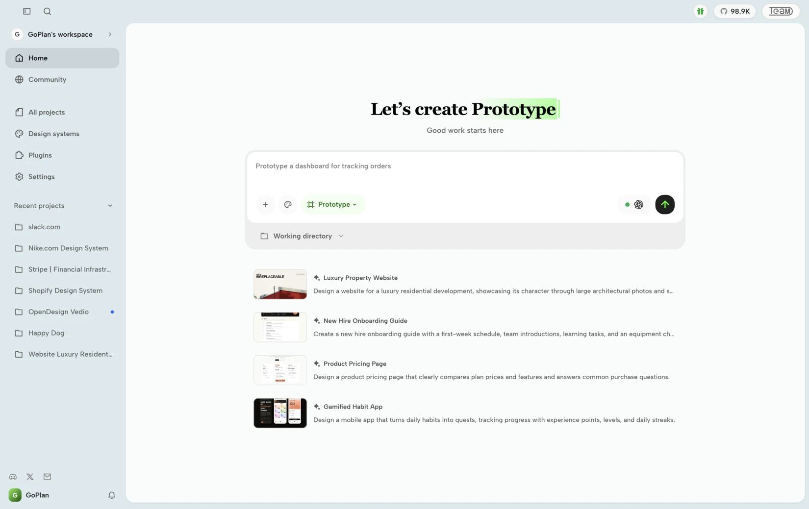

AI Цех · поток 4 · урок 4
Приложение
в своём стиле
Возьмём экран своего продукта, применим правило брендбука и проверим результат на телефоне.
Два часа практики
Что делаем сегодня
Ваш проект
Два живых случая. Каждый выбирает один экран.
Свой стиль
Карточка стиля и один экран до и после.
Помощники
Разовый критик и сохранённая роль для проверки.
Итог и домашка
Проверка на 390 px и результат для сдачи.
Разбор · по пять минут
Где остановился ваш проект?
Практика · Ваш проект
Зафиксируйте один факт
- ДействиеОбновляю страницу после сохранения заявки.
- ОжиданиеЗаявка остаётся в списке.
- ФактПосле обновления запись исчезает.
Дизайн · 45 минут
Open Design
Один экран, один сценарий и одна правка в своём стиле.
Учебный брендбук · заполните свой
Как ваш продукт выглядит и говорит
Системный без засечек, полужирный.
«Только открытые» и «Все». По подписи понятно, какие заявки останутся.
Практика · Open Design
Дайте программе экран и правило

Практика · применяем брендбук
Меняем цвет активного фильтра
Экран заявок · до и после
Проверьте главное действие
Утренние заявки
Утренние заявки
Кто и как проверяет экран
Зачем звать отдельного помощника?
Как устроен запуск
Из чего состоит субагент
Главный агент
Оркестратор. Держит цель и историю, распределяет работу и принимает ответы.
Субагент
Подход 1 · работа уже началась
Позовите одного критика
Практика · Подход 1
Что человек увидит первым?
- ПередайтеДва снимка на 390 px и одно правило из своей карточки.
- ПокажитеОткройте отдельную ветку и найдите в ответе конкретный элемент.
- РешитеПримете ли вы замечание? Покажите на экране почему.
Подход 2 · повторяемая проверка
Сохраните своего проверяющего
.codex/agents/design-checker.toml
- name
- Имя для вызова
- description
- Когда звать
- developer_instructions
- Что и как проверять
- model
- По желанию
Одна роль. Каждый вызов открывает рабочую ветку.
Практика · Подход 2
Вызовите роль в новом чате
- СоздайтеСохраните design-checker.toml и прочитайте инструкцию.
- ВызовитеОткройте новый чат той же папки и назовите роль.
- ПроверьтеПередайте исходный экран на 390 px. Откройте отдельный вывод.
Практика · Итог
Тот же помощник, обновлённый экран
- Дайте контекстВызовите сохранённого design-checker. Приложите до, после и карточку стиля.
- Повторите на 390 pxТолько открытые — одна, Все — две, Только открытые — снова одна.
- Примите выводВ макете оцениваем видимость. Поведение фильтра проверяем в рабочем экране.
Самостоятельная практика